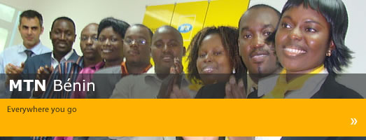

A propos de MTN

MTN Bénin est une entreprise de télécommunications qui a vu le jour le 01 Juin 2006, avec le rachat, par le groupe sud-africain M-Cell devenu par la suite MTN International, de la licence de téléphonie mobile de Areeba (Spacetel Bénin). Suivant les dispositions de la convention de cession, le capital social de MTN Bénin est de FCFA 892.000.000 réparti de la façon suivante : 75% sont détenus par MTN International et 25 % par les autres actionnaires.
Aujourd'hui, MTN Bénin compte plus d'un Million d'abonnés actifs au Bénin et représente près de 40 % de part de marché. Ce qui fait de MTN le leader du secteur de la téléphonie mobile au Bénin.
MTN Bénin propose à sa clientèle une gamme d'offres en téléphonie mobile dont les produits de référence se déclinent dans les formules Pay as you Go et Pay Monthly. Les principaux services à valeur ajoutée sont : MTN MMS, MTN Internet, MTN One World, Roaming, Mobile Money, MTN Zik, MTN Bip me, SMS, Me2U (transfert de crédit), MTN Numéros Favoris, MTN Voice SMS.
Le réseau de distribution de MTN Bénin est composé de plus de 2000 distributeurs et points de vente répartis sur l'ensemble du territoire.
MTN Bénin emploie à ce jour près de 500 personnes, et est animé par une philosophie fondée sur une mission: offrir des solutions de communication simples et accessibles pour une vie meilleure.
Notre vision: « Etre le leader des télécommunications sur les marchés en développements »
Notre mission: « Etre le leader dans chacun de nos marchés à travers une orientation client et une offre de services à valeur ajoutée innovants »
Nos valeurs: Can Do, Leadership, Innovation, Relationships, Integrity
En plus du Bénin, MTN est présent dans 21 autres pays en Afrique et au Moyen Orient, que vous pouvez découvrir à travers leurs sites respectifs.
| MTN (Unités d'Opérations) |
| Nom: | URL: |
MTN Afrique du Sud | www.mtn.co.za |
| MTN Nigeria | www.mtnonline.com |
| MTN Ouganda | www.mtn.co.ug |
| MTN Rwanda | www.mtn.co.rw |
| MTN Swaziland | www.mtn.co.sz |
| MTN Côte d'Ivoire | www.mtn.ci |
| MTN Cameroun | www.mtn.cm |
| MTN Ghana | www.mtn.com.gh |
| MTN Congo Brazzaville | www.mtncongo.net |
| MTN Libéria |
| MTN Guinée Conakry | www.areeba-guinea.com |
| MTN Iran |
| MTN Syrie | www.mtn.com.sy |
| MTN Zambie | www.mtnzambia.co.zm |
| MTN Bostwana |
| MTN Afghanistan | www.mtn.com.af |
| MTN Soudan | www.mtn.sd |
| MTN Yemen | www.mtn.com.ye |
| MTN Guinée Bissau | www.areeba.com.gw |
| MTN Chypre |